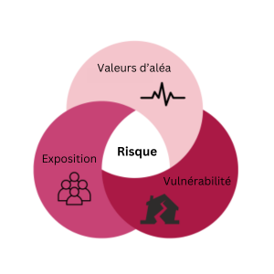

Les séismes représentent un risque pour la population et les infrastructures au Canada. Bien qu’ils soient rarement dévastateurs, les séismes sont inévitables et ont d’importantes répercussions, surtout lorsque leur épicentre se trouve à proximité d’une zone densément peuplée. Lorsqu’un sol ferme est secoué par un séisme, cela peut avoir des conséquences sur beaucoup de choses qui nous tiennent à cœur et sur lesquelles nous comptons. Les séismes peuvent blesser des gens, perturber des entreprises, endommager des infrastructures, déstabiliser et liquéfier le sol ou déclencher un tsunami ou des incendies dans des bâtiments endommagés. Si les collectivités ne sont pas préparées aux effets des séismes, elles pourraient ne pas avoir la capacité d’y résister et de s’en remettre. Les scénarios de séisme aident à comprendre les répercussions possibles des séismes et à s’y préparer.
Un séisme est un épisode sismique qui se produit lorsqu’il y a libération soudaine d’énergie dans la croûte terrestre. Les séismes surviennent le long des failles, des zones où les blocs de la croûte terrestre glissent les uns sur les autres. Les sismologues et les spécialistes des sciences de la Terre de Ressources naturelles Canada (RNCan) examinent l’activité sismique et les preuves de séismes passés contenues dans les enregistrements géologiques et historiques afin de déterminer les zones où des séismes pourraient se produire au Canada. Vous pouvez en apprendre davantage sur le travail de RNCan et la compréhension des risques sismiques au Canada en cliquant ici, et obtenir des renseignements généraux de Sécurité publique Canada en cliquant ici.
Les traditions orales et l’histoire de nombreux peuples autochtones abordent les séismes et les tsunamis ainsi que leurs répercussions.

Une carte des séismes qui ont été estimés ou enregistrés au moyen de sismographes entre 1627 et 2020 est présentée ci-dessous.
On peut comprendre le risque sismique en examinant l’effet de scénarios particuliers et en tenant compte de la probabilité de dommages au moyen d’une approche probabiliste. La plateforme RiskProfiler fournit des estimations des risques sismiques pour des scénarios de séisme précis ainsi que pour des périodes d’un an ou de 50 ans (périodicité) à partir d’une estimation probabiliste de tous les séismes possibles.
Qu’est-ce que le risque?
Le risque résulte d’une combinaison de valeurs d’aléa, d’exposition et de vulnérabilité. La figure ci-dessous illustre le risque

L’aléa est l’intensité prévue des secousses lors d’un séisme. Il varie d’une région à l’autre et est généralement plus élevé dans les zones sismiques actives, notamment les régions de la côte ouest, du Yukon et du fleuve Saint-Laurent, comme le montre la carte ci-dessous.

L’exposition mesure les actifs susceptibles d’être touchés par les secousses. Dans RiskProfiler, l’exposition des bâtiments, du contenu des bâtiments et des personnes aux séismes est estimée. La vulnérabilité décrit le risque de subir des dommages ou des pertes selon la gravité du séisme. Elle se fonde sur des caractéristiques telles que la construction des bâtiments, la résilience aux séismes ou la vulnérabilité sociale.
En combinant notre compréhension des valeurs d’aléa, d’exposition et de vulnérabilité, on obtient un risque. Deux communautés identiques présentant un même aléa pourraient être exposées à des risques très différents si l’une d’elles possède des bâtiments qui peuvent être plus facilement endommagés par les séismes. Par exemple, les bâtiments historiques en briques ont tendance à être plus facilement endommagés par les séismes que les bâtiments en bois. Bien que nous ne puissions pas changer notre aléa sismique sous-jacent, nous pouvons élaborer des stratégies pour réduire notre exposition potentielle et notre vulnérabilité afin de gérer les risques. Les renseignements fournis sur RiskProfiler sont conçus pour aider les utilisateurs à atteindre cet objectif.
Certains modèles de risque peuvent également tenir compte de la capacité et d’autres conséquences, comme les perturbations, les dommages aux infrastructures, les déménagements et les aléas subséquents, mais RiskProfiler ne prend pas ces éléments en compte pour le moment.
Consultez la FAQ pour obtenir de plus amples renseignements sur les estimations des risques et la section En savoir plus sur les incertitudes et l’utilisation prévue (Uncertainties and Intended Use).